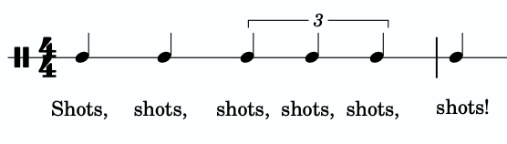
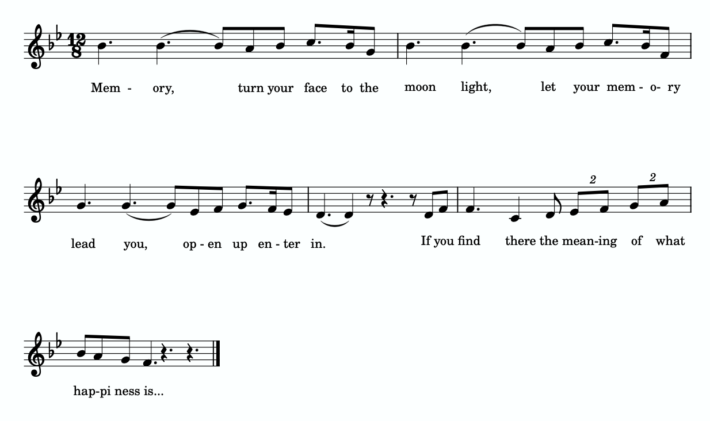

Open Music Theory：繁體中文版
其他節奏基礎
查看英文原文
Key Takeaways
- A triplet is a type of tuplet in which a beat (or subdivision, or multiple beats) in simple meter is divided into three parts. Notate a triplet by writing a 3 above the triplet rhythm.
- A duplet is a tuplet in which a beat (or subdivision) in compound meter is divided into two parts. Notate a duplet by writing a 2 above the duplet rhythm.
- Hypermeter refers to the patterns of accentuation at the metrical level.
- Syncopation happens when there are off-beat rhythmic accents, which can be created by ties, dots, rests, and/or dynamics.
通常，拍節由固定一致的拍內分割方式界定：單拍子每拍分成兩等分，複拍子每拍分成三等分。有時，作曲家會在單拍子中將一拍三等分，或在複拍子中將一拍二等分；這些節奏稱為連音。三連音是其中一種，將單拍子中的一拍（或拍內分割、或數拍）分成三等分。三連音有時被視為從複拍子「借用」而來，因為複拍子的每拍通常分成三等分。記譜時，在三連音節奏的上方寫上數字 3。
三連音可以出現在任何拍節層次，如譜例 1所示。譜例 1a的三連音位於一拍的層次，這是最常見的用法。譜例 1b顯示十六分音符三連音，其總長相當於一個八分音符（此拍號的拍內分割單位）。三連音也可以橫跨數拍，如譜例 1c所示。這組以三個四分音符記寫的三連音，占用一個二分音符的時值。
譜例 1。三連音分別位於（a）一拍、（b）拍內分割，以及（c）數拍的層次。
三連音在許多不同類型的音樂中都極為常見。LMFAO 的〈Shots〉（2009）就是一例。譜例 2顯示副歌中反覆出現的節奏，其中包含橫跨數拍的三連音：

從譜例 3的 1:18 開始，可以聽到〈Shots〉的副歌：
譜例 3。LMFAO〈Shots〉；請從 1:18 開始聆聽。
譜例 4。在二連音節奏上方寫上數字 2，以標示二連音。
二連音也相當常見，雖然可能不如三連音普遍。譜例 5節錄安德魯・洛伊・韋伯音樂劇《貓》（1980）中〈Memory〉的再現段，其中包含以一拍為單位的二連音：

譜例 6的開頭即可聽到這段包含二連音的音樂：
譜例 6。安德魯・洛伊・韋伯〈Memory〉，由飾演 Grizabella 的 Elaine Page 演唱。
連音的數拍方式通常也會「借用」另一種拍子的數法。例如，三連音通常數作「1-la-li」，二連音通常數作「1-and、2-and」等。
查看英文原文
Borrowed Divisions
Typically, a meter is defined by the presence of a consistent beat division: division by two in simple meter, and by three in compound meter. Sometimes composers will use a triple division of the beat in a simple meter, or a duple division of the beat in a compound meter; these rhythms are called tuplets. Triplets are a type of tuplet in which a beat (or subdivision, or multiple beats) in simple meter is divided into three parts. Triplets are sometimes thought of as “borrowed” from compound meter, because the beat in compound meter is usually divided into three parts. A triplet is notated by writing the number 3 on top of the triplet rhythm.
Triplets may occur at both any metric level, as seen in Example 1. In Example 1a, the triplet is at the beat level—this is the most common use of a triplet. Example 1b shows a sixteenth-note triplet, which is equivalent to one eighth note (the division in this time signature). Triplets also may occur across multiple beats, as seen in Example 1c. This triplet (notated with three quarter notes) takes up the space of one half note.
Example 1. Triplets at (a) the beat level, (b) the subdivision level, and (c) the multi-beat level.
Triplets are extremely common in many different genres of music. One example can be found in LMFAO’s “Shots” (2009). Example 2 show the repeated rhythm from the song’s chorus, which contains a multi-beat triplet:
You can listen to the chorus of “Shots” beginning at 1:18 in Example 3:
Example 3.“Shots” by LMFAO; listen starting at 1:18.
A duplet is a tuplet in which a beat (or subdivision) in compound meter is divided into two parts. Duplets are notated by writing the number 2 on top of the duplet rhythm, as seen in Example 4.
Example 4. Notate a duplet by writing a 2 on top of the duplet rhythm.
Duplets are also fairly common, though perhaps not as common as triplets. Example 5 shows an excerpt from the reprise of “Memory” from Cats (1980) by Andrew Lloyd Webber, which includes beat-level duplets:
You can listen to this excerpt which includes duplets at the beginning of Example 6:
Example 6.“Memory” by Andrew Lloyd Webber, performed by Elaine Page as Grizabella.
Counting for tuplet rhythms is usually “borrowed” as well. For example, triplets are usually counted 1-la-li, while duplets are usually counted 1-and, 2-and, etc.
前兩章討論指揮圖式時，已經看到拍可以分為有重音與沒有重音兩類（參閱〈單拍子與拍號〉與〈複拍子與拍號〉）。超小節拍節是由多個小節組成的重音規律，速度較快時尤其明顯。為了標示跨越多個小節的重音規律，可以在譜上註記超小節的拍數，如譜例 7所示。這是貝多芬《第九號交響曲》（1824）〈詼諧曲〉的縮編片段。聆聽譜例 7時，試著依超小節拍數打出四拍子的指揮圖式。如此便能感受並聽出哪些小節較強（1、3），哪些小節較弱（2、4）。
- Hypermetric counting＝超小節拍數；
- 藍色1、2、3、4表示四個小節在較大週期中的位置，不是每小節內的四拍。
- 拍號3/4；
- 附點二分音符＝100表示每小節100次的速度。
原單頁無樂器名稱標示。
譜例 7。貝多芬《第九號交響曲》（1824）〈詼諧曲〉的八個小節，附超小節拍數。
這裡只簡短介紹超小節拍節。若想進一步了解，可以閱讀《Open Music Theory》作者之一 Brian Jarvis 撰寫的〈超小節拍節〉。
查看英文原文
A Brief Introduction to Hypermeter
We have seen that beats are either accented or non-accented which was observed in the discussion of conducting patterns in the previous two chapters (see Simple Meter and Time Signatures and Compound Meter and Time Signatures). Hypermeter refers to groups of measures that form patterns of accentuation, especially at faster tempos. In order to label patterns of accentuation across multiple measures, it can be helpful to annotate the score with hypermetrical counts as in Example 7, which shows a reduced excerpt from the “Scherzo” of Ludwig van Beethoven’s Symphony no. 9 (1824). While listening to Example 7, try conducting along to the hypermetrical numbers in a quadruple pattern. By doing this, you will be able to feel (and hear) which measures are more accented (1 and 3) and which are less accented (2 and 4).
Example 7. Eight measures of the “Scherzo” of Ludwig van Beethoven’s Symphony no. 9 (1824) with hypermetric counts.
This introduction to hypermeter is extremely brief. For more information, you may want to to read Hypermeter by Brian Jarvis, one of the authors of Open Music Theory.
切分音出現在節奏重音落於非正拍位置時（詳見〈流行音樂中的節奏與拍節〉）。如譜例 8所示，延音線、附點、休止符或力度都可以造成切分音。第一小節以延音線造成切分；第二小節則同時使用附點與延音線。第三小節每拍開頭的休止符帶來切分感。第四小節雖然每個拍內分割位置都有八分音符，但非正拍位置上的重音（力度）仍造成切分。
譜例 8。不同的切分節奏範例。
以下練習可幫助你辨識二連音、三連音與切分音：
以下練習可讓你進一步熟悉二連音、三連音與切分節奏：
- Bent, Ian D. 等。2001。〈Notation〉（記譜法）。Grove Music Online。https://doi.org/10.1093/gmo/9781561592630.article.20114。
- Cone, Edward T.。1968。Musical Form and Musical Performance（音樂曲式與音樂演出）。紐約：W.W. Norton & Company。
- Gerou, Tom 與 Linda Lusk。1996。Essential Dictionary of Music Notation（音樂記譜必備辭典）。洛杉磯：Alfred。
- Krebs, Harold。1999。Fantasy Pieces（幻想曲集）。紐約：Oxford University Press。
- Lerdahl, Fred 與 Ray Jackendoff。1983。A Generative Theory of Tonal Music（調性音樂的生成理論）。麻薩諸塞州劍橋：MIT Press。
- London, Justin。2001。〈Metre〉（拍節）。Grove Music Online。https://doi.org/10.1093/gmo/9781561592630.article.18519。
- McGrain, Mark。1986。Music Notation（音樂記譜法）。波士頓：Berklee Press。
- Roemer, Clinton。1985。The Art of Music Copying: The Preparation of Music for Performance（抄譜的藝術：為演出準備樂譜），第 2 版。Sherman Oaks：Roerick Music Company。
- Rothstein, William。1989。Phrase Rhythm in Tonal Music（調性音樂中的樂句節奏）。紐約：Schirmer。
媒體出處與授權
- 〈LMFAO「Shots」節奏〉© Chelsey Hamm，採用 CC BY-SA（姓名標示—相同方式分享）授權。
- 〈韋伯《貓》「Memory」〉© Chelsey Hamm，採用 CC BY-SA（姓名標示—相同方式分享）授權。
查看英文原文
Syncopation
Syncopation happens when there are off-beat rhythmic accents (see Rhythm and Meter in Pop Music for more information), and as Example 8 shows, it can be created by ties, dots, rests, and/or dynamics. In measure 1, the ties create the syncopation, while in measure 2, the rhythm is syncopated because of both a dot and a tie. The sense of syncopation in measure 3 is created by the rests at the beginning of each beat. In measure 4, while there is an eighth note on each division, the off-beat accents (dynamics) produce syncopation.
Example 8. Different examples of syncopated rhythms.
You can practice identifying duplets, triplets, and syncopation in the following exercise:
You can practice more with duplet, triplet, and syncopated rhythms in the following exercise:
- Bent, Ian D. et al. 2001. “Notation.” Grove Music Online. https://doi.org/10.1093/gmo/9781561592630.article.20114.
- Cone, Edward T. 1968. Musical Form and Musical Performance. New York: W.W. Norton & Company.
- Gerou, Tom and Linda Lusk. 1996. Essential Dictionary of Music Notation. Los Angeles: Alfred.
- Krebs, Harold. 1999. Fantasy Pieces. New York: Oxford University Press.
- Lerdahl, Fred and Ray Jackendoff. 1983. A Generative Theory of Tonal Music. Cambridge, MA: MIT Press.
- London, Justin. 2001. “Metre.” Grove Music Online. https://doi.org/10.1093/gmo/9781561592630.article.18519.
- McGrain, Mark. 1986. Music Notation. Boston: Berklee Press.
- Roemer, Clinton. 1985. The Art of Music Copying: The Preparation of Music for Performance, 2nd edition. Sherman Oaks: Roerick Music Company.
- Rothstein, William. 1989. Phrase Rhythm in Tonal Music. New York: Schirmer.
- Triplets and Duplets (YouTube)
- Triplets (Hello Music Theory)
- Duplets (Hello Music Theory)
- Syncopation (Music Theory Academy)
- Syncopated Rhythm Practice (YouTube)
- Counting Triplets (.pdf, .pdf, .pdf, .pdf)
- Counting Duplets, p. 13 (.pdf)
- Hypermetrical Numbers (.pdf)
- Counting Syncopation (.pdf, .pdf)
- Triplets and Duplets, Hypermeter, and Syncopation (.pdf, .docx) Worksheet playlist
Media Attributions
- Shots Rhythm LMFAO © Chelsey Hamm is licensed under a CC BY-SA (Attribution ShareAlike) license
- Memory Cats Webber © Chelsey Hamm is licensed under a CC BY-SA (Attribution ShareAlike) license